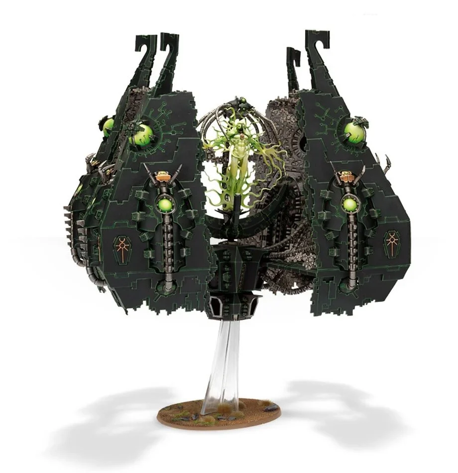
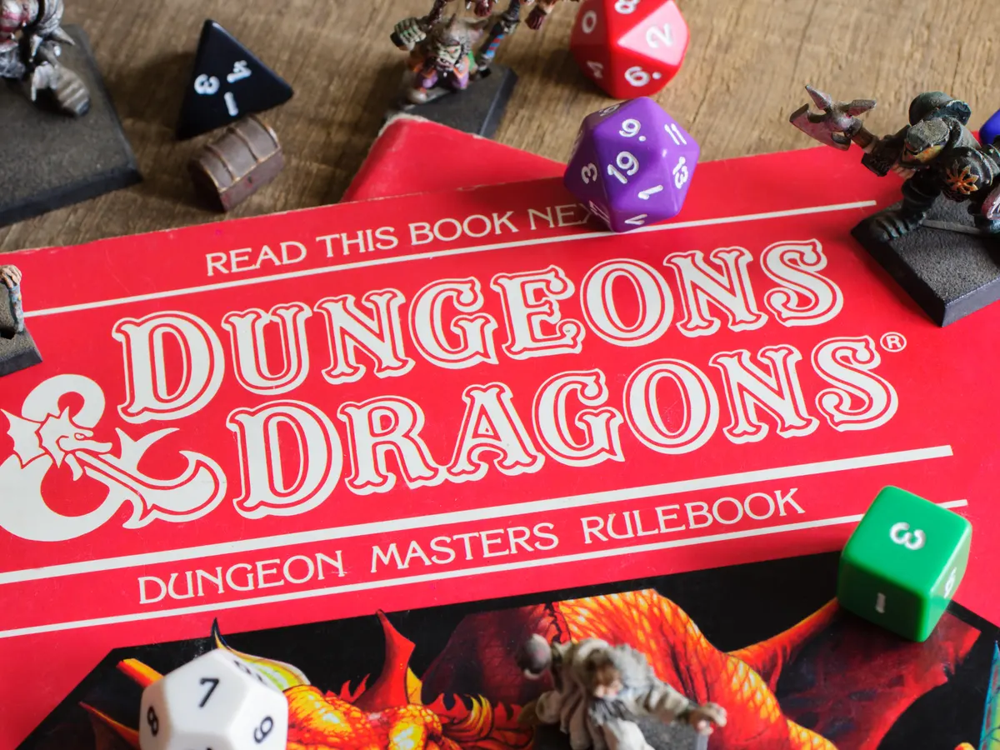
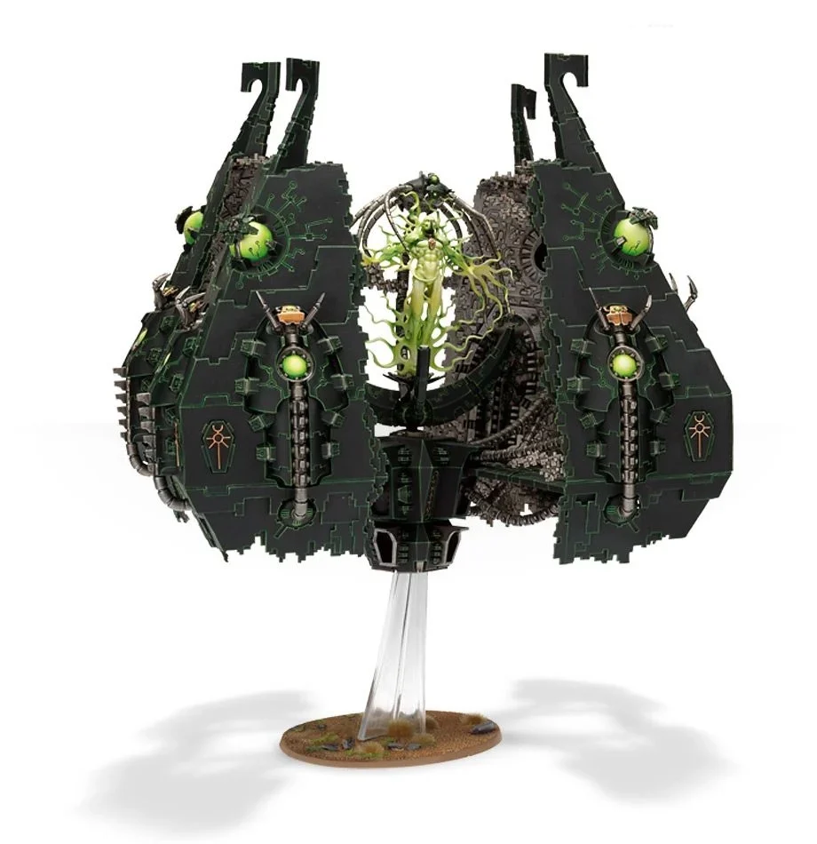
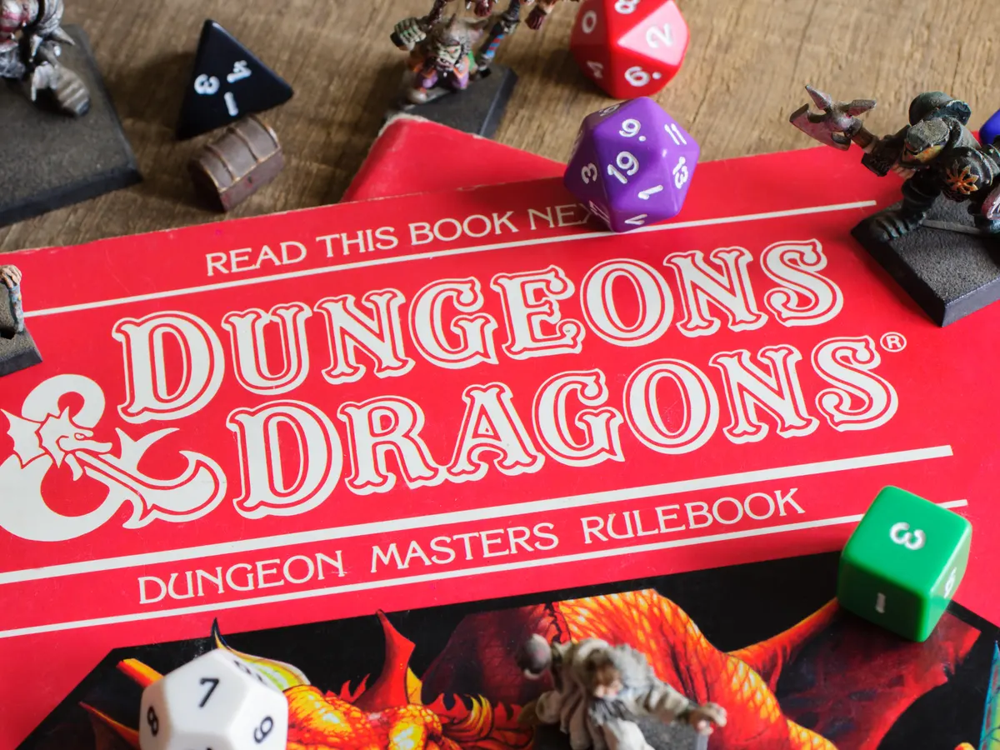

My First Programming Portfolio
Max Betich
Past and Present Projects
- Hello World
- Cookie Recipe
- My First Webpage
- Cupcake Shop
- Band
- Animal Shelter
One of my first forays into exploring HTML.
My initial practice with including images and anchor tags.
Becoming more comfortable with incorporating anchor tags and images into webpages.
My first page designed to incorporate CSS elements.
A page to practice incorporating floats and sizing elements to arrange images and create sidebars and columns
A page practicing the application of CSS cascading functionality and media query elements.
About Me
I like to think I've traveled an interesting path in life to get to where I am now: I've lived in a lot of different places, met many different kinds of people, and done a lot of different things to make a living. In the course of those travels, an old friend told me about how learning to code opened up a great opportunity for him, and I felt like it was worth my time to see what I could learn. I've found the process fascinating so far!
Hobbies, Interests, Skills
- Hiking
- Miniature Modeling
- Roleplaying Games
I've hiked up and around several of the Cascade Range mountains, and seen some gorgeous views during mytime in the Wallowas in eastern Oregon. I would love to climb North Sister to finish off the trio some day,as well as explore Mt. Shasta.
My parents and relatives kept me well-supplied with various Lego sets as a kid, and the enthusiasm I found for building and fine detail work has led me to amass a sizeable collection of plastic model kits over the years. I don't consider a project to be truly finished until I've sliced open a finger with a modeling knife and accidentally glued my hands together in the pursuit of perfection!
I've been a fan of games like Dungeons and Dragons since I was first introduced to them back in middle school. To me, they're a great creative outlet and socialization tool, and I often find myself working on my collection of character voices or dramatic flourishes in my idle moments. I've also met some amazing people through these games, and with the evolution of online social tools, I've gotten the opportunity to play with like-minded fans from literally all around the world.
 


